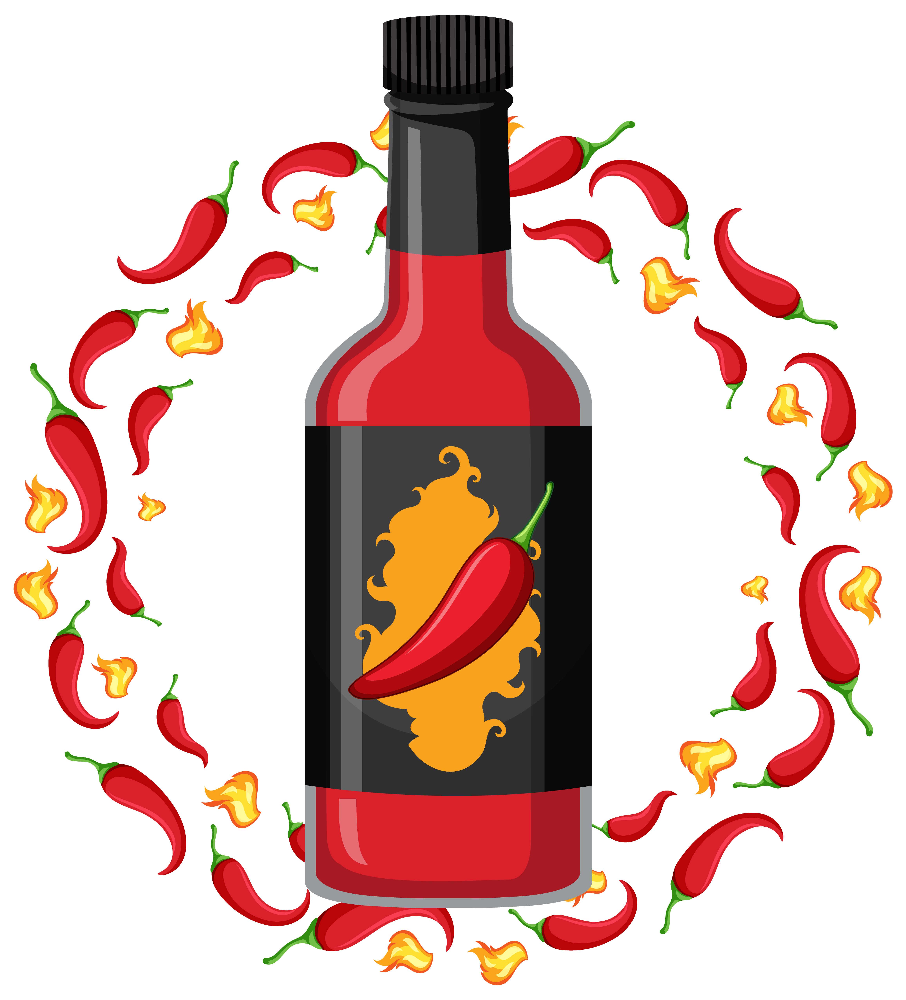

Welcome to the Essentials!
These are things I personally have always had and believe are things that everyone should have when living anywhere as a minimum.

I will say though, make sure you try to eat healthy and get all of your food groups in your daily diet!
Utensil Essentials
- Pan
- Pot
- Chopsticks
- One big knife (that can handle everything if you can get your hands on one)
- At least one bowl
- At least two containers (cause if you make pasta you don't want your noodles getting soggy
Spice Essentials
- Salt
- Pepper
- Adobo
- All purpose-seasoning
- Oil
- Hot Sauce
Okay...I admit some of these aren't spices, but I don't know what category to put them under.
Sidenote: A staple that I never NOT have in my pantry is HOT SAUCE. It's amazing. End of story.
Ingredient Essentials
- Any type of meat
- Rice hehehehehehhe
- Bread
- Simple Veggies (Carrots, lettuce, etc.)
- Fruits (if you can afford it haha)
- cheese